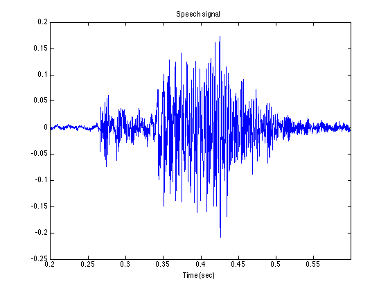
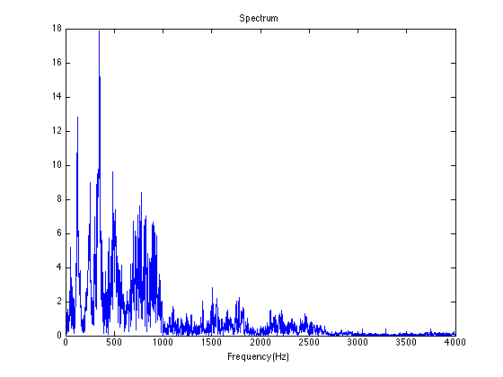
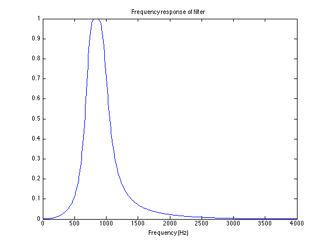
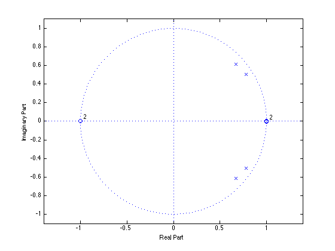
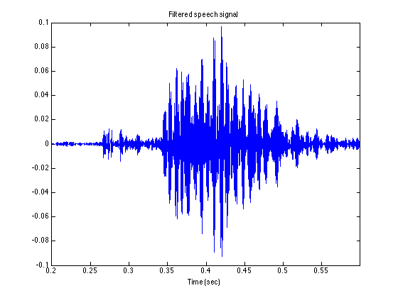
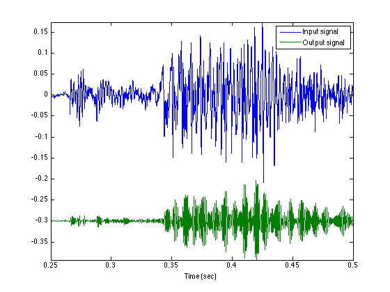
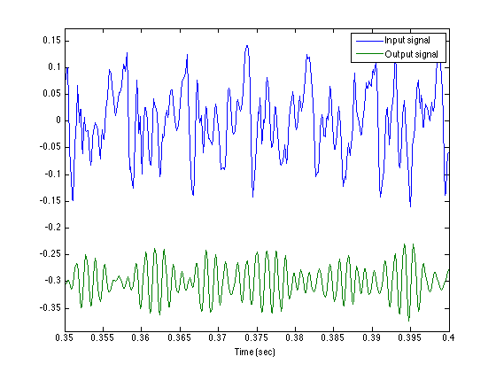
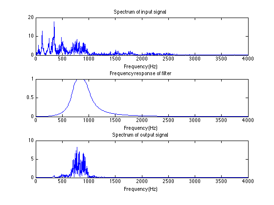

filter_cat.m
Band-pass filter demo
Contents
Load speech signal
clear close all [x, Fs] = wavread('cat01.wav'); % or use % [x, Fs] = audioread('cat01.wav'); Fs soundsc(x, Fs)
Fs =
8000
Plot waveform
N = length(x); t = (1:N)/Fs; figure(1) clf plot(t, x) xlabel('Time (sec)') title('Speech signal') xlim([0.2 0.6])
Fourier transform
Use the FFT
% Use power of 2 for FFT speed Nfft = 2^ceil(log2(N)) X = fft(x, Nfft); % X will be of length Nfft X = fftshift(X); fn = (-Nfft/2:Nfft/2-1)/Nfft; % fn : normalized frequency f = Fs * fn; % f : frequency in Hz figure(1) clf plot(f, abs(X)) xlabel('Frequency (Hz)') title('Spectrum') xlim([0 4000])
Nfft =
8192
 Make a filter
Lets make a band-pass Butterworth filter
% Band-egdes (Hz) f1 = 700; f2 = 1000; % b, a : difference equation coefficients for Butterworth filter [b, a] = butter(2, [f1, f2]*2/Fs);
Frequency response
Use 'freqz' to calculate the frequency response of the filter
[H, om] = freqz(b, a); f_freqz = om*Fs/(2*pi); plot(f_freqz, abs(H)) % plot(f_freqz, abs(H), [f1 f1], [0 1], 'r', [f2 f2], [0 1], 'r') title('Frequency response of filter') xlabel('Frequency (Hz)')
Pole-zero diagram
zplane(b, a)
Run the filter
Run the signal x through the difference equation
y = filter(b, a, x); % y : output of filter figure(1) clf plot(t, y) xlabel('Time (sec)') title('Filtered speech signal') xlim([0.2 0.6])
Plot the input and output signal (vertical offset of 'y' to make the signal more clear)
figure(1) clf plot(t, x, t, y - 0.3) legend('Input signal', 'Output signal') xlabel('Time (sec)') axis tight xlim([0.25 0.5]) orient landscape print -dpdf filter_cat_signals
xlim([0.35 0.4])
List to the output signal
soundsc(y, Fs)
Frequency-domain plots
Y = fft(y, Nfft); Y = fftshift(Y); figure(2) clf subplot(3, 1, 1) plot(f, abs(X)) xlabel('Frequency (Hz)') title('Spectrum of input signal') xlim([0 4000]) subplot(3, 1, 2) plot(f_freqz, abs(H) ) xlabel('Frequency (Hz)') title('Frequency response of filter') xlim([0 4000]) subplot(3, 1, 3) plot(f, abs(Y))% , f, abs(X)) xlabel('Frequency (Hz)') title('Spectrum of output signal') xlim([0 4000]) orient tall print -dpdf filter_cat_freq
Exercises
Use a higher-order Butterworth filter. Compare.
Use a Chebyshev filter instead of a Butterworth filter (cheby1 or cheby2 in Matlab).
Use an Elliptic filter instead of a Butterworth filter (ellip in Matlab)
Implement the filter in real-time in PyAudio on the same wavefile. Read the wavefile into Python, implement a difference equation, and play the output signal as you calculate it.